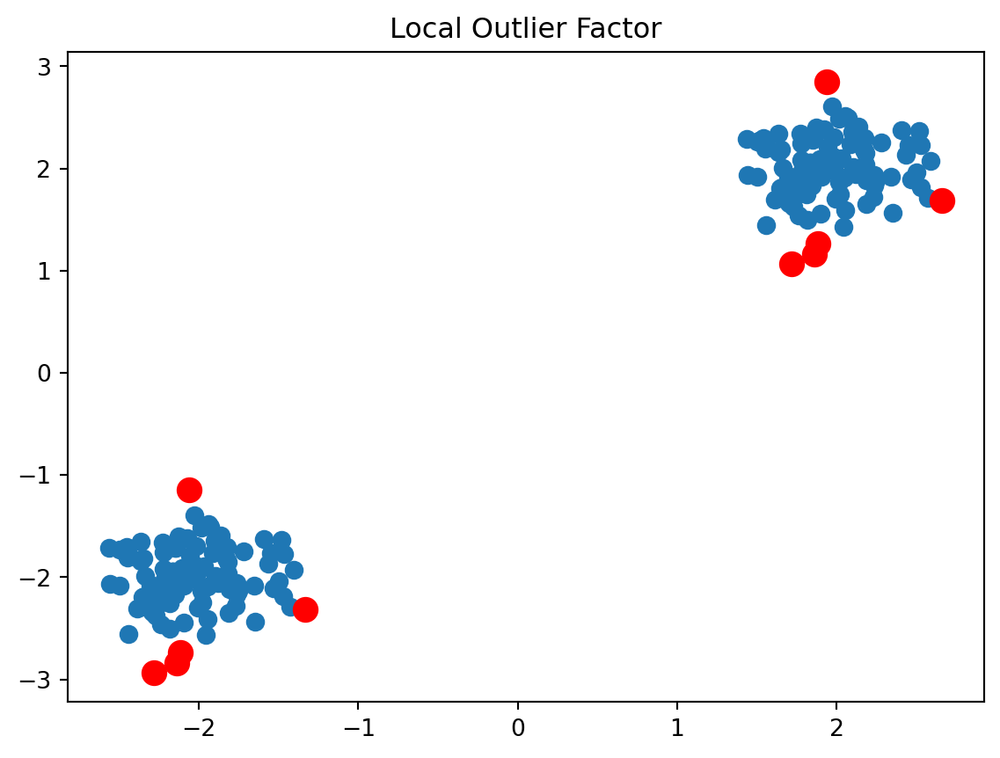

Anomaly/outlier detection • Anomaly detection refers to identifying rare items, events or observations that are significantly different from the majority of the data. These outliers or anomalies may be indicative of some issue or abnormal behavior. • Goal is to detect anomalies with high accuracy while minimizing false positives. • Applications include fraud detection, network intrusion, breakdown detection in manufacturing, etc. Common approaches: o Statistical methods: Declare points outliers if they are far from mean/median or in the tails of a distribution. o Distance-based: Find points with low nearest neighbor density as outliers. o Classification-based: Train binary classifiers to distinguish between normal and outlier classes. o Clustering: Identify small clusters or points far from clusters as anomalous. • Unsupervised methods like statistical metrics, isolation forests and local outlier factor do not require labeled data. • Supervised models like SVM, neural networks can be trained if labeled examples of anomalies exist. • Key challenges are class imbalance (far more normal points than anomalies), obtaining labels, and defining anomalies for complex data. • Evaluation metrics include precision, recall, F1-score. Cross-validation helps avoid overfitting. • Overall, anomaly detection is critical for identifying irregularities, errors, novelties and outliers that could indicate important events or issues.
Example using Local Outlier Factor
Code
from sklearn.neighbors import LocalOutlierFactorimport numpy as npimport matplotlib.pyplot as plt# Generate sample dataX =0.3* np.random.randn(100, 2)X = np.r_[X +2, X -2]# # Fit LOF modelclf = LocalOutlierFactor()y_pred = clf.fit_predict(X)# Identify outliersoutlier_idx = np.where(y_pred ==-1)# Plot dataplt.scatter(X[:,0], X[:,1], s=50)plt.scatter(X[outlier_idx,0], X[outlier_idx,1], color='r', s=100)plt.title("Local Outlier Factor")plt.show()

• This fits a LOF model to randomly generated sample data, makes predictions to identify outliers, and plots the outliers in red. • LOF is an unsupervised anomaly detection method that works well with low dimensional data. The key steps - fit model, predict outliers, evaluate results - demonstrate the basic workflow for applying anomaly detection in Python.
Example using Isolation Forest
Code
import numpy as npimport matplotlib.pyplot as pltfrom sklearn.datasets import load_winefrom sklearn.ensemble import IsolationForestfrom sklearn.metrics import precision_score, recall_score, f1_scoreimport warningswarnings.filterwarnings('ignore')# Load the wine dataset from Scikit-learnwine = load_wine()X = wine.datay = wine.target# Add outliers to the dataset (for demonstration purposes)outliers = np.array([[14, 2, 2, 80, 1, 3, 1, 1, 5, 1, 1, 1, 1000], # Adding an outlier to the first sample [12, 1, 2, 10, 2, 2, 1, 2, 3, 1, 2, 1, 50]]) # Adding an outlier to the second sampleX_with_outliers = np.vstack([X, outliers])y_with_outliers = np.concatenate([y, [-1, -1]]) # Adding labels for outliers# Fit the Isolation Forest modelmodel = IsolationForest(contamination=0.05) # Adjust the contamination parameter as neededmodel.fit(X_with_outliers)# Predict anomaliespredictions = model.predict(X_with_outliers)# Evaluate the modelprecision = precision_score(y_with_outliers, predictions, pos_label=-1, average='weighted')recall = recall_score(y_with_outliers, predictions, pos_label=-1, average='weighted')f1 = f1_score(y_with_outliers, predictions, pos_label=-1, average='weighted')print(f'Precision: {precision:.2f}')print(f'Recall: {recall:.2f}')print(f'F1 Score: {f1:.2f}')
Precision: 0.15
Recall: 0.38
F1 Score: 0.22
Code
# Plot the resultsplt.figure(figsize=(10, 6))# Plot normal data pointsplt.scatter(X[:, 0], X[:, 1], c='blue', label='Normal Data')# Plot outliersplt.scatter(outliers[:, 0], outliers[:, 1], c='red', label='Outliers', marker='x', s=100)# Highlight predicted anomaliesplt.scatter(X_with_outliers[predictions ==-1, 0], X_with_outliers[predictions ==-1, 1], c='yellow', label='Predicted Anomalies', marker='o')plt.title('Isolation Forest Anomaly Detection on Scikit-learn Wine Data (with Outliers)')plt.xlabel('Feature 1')plt.ylabel('Feature 2')plt.legend()plt.show()